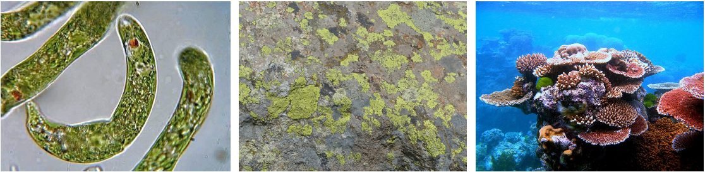
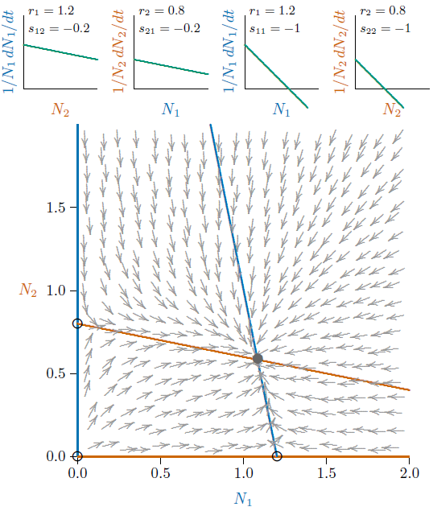
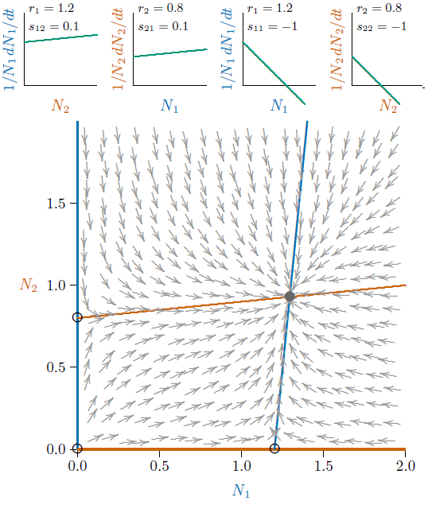
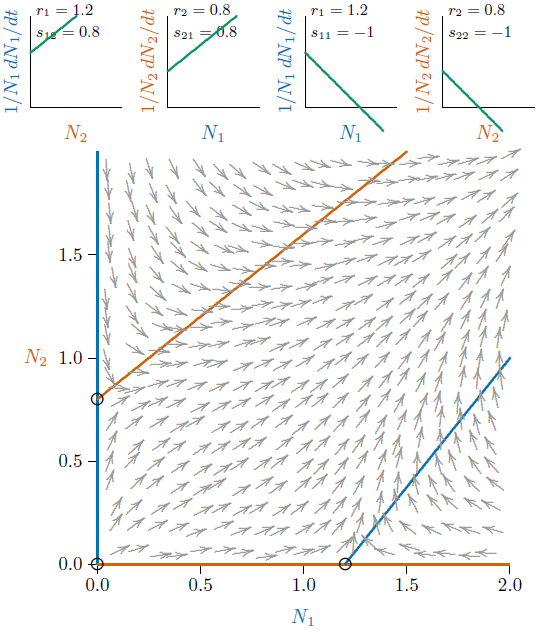
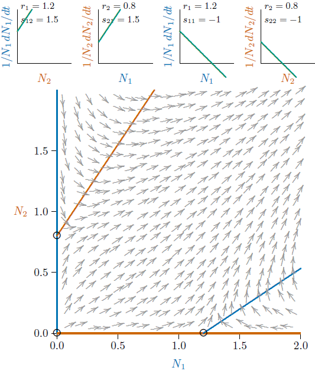
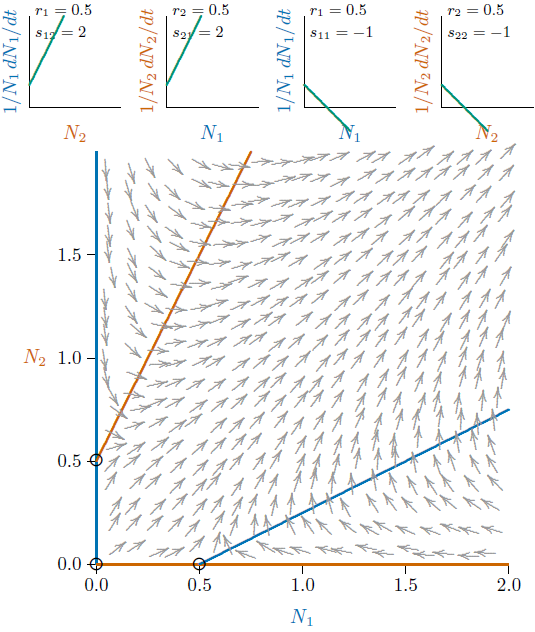
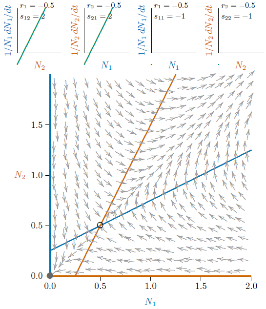
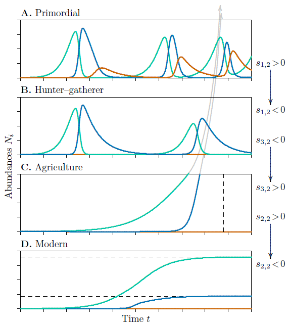
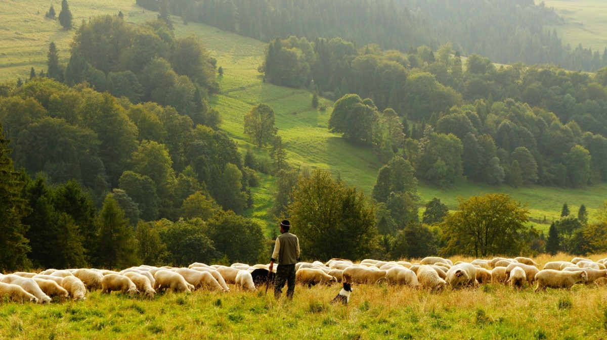

17 Mutualism
In Equation 8.1, mutualism occurs when the interaction terms, \(s_{1,2}\) and \(s_{2,1}\), are both positive. This is the defining feature of mutualism. The self-engagement terms, \(s_{1,1}\) and \(s_{2,2}\), may be positive or negative, and the intrinsic growth terms, \(r_1\) and \(r_2\), may also be positive or negative.
If both growth terms \(r_i\) are positive, then either species can survive on its own, without the presence of the other. This is called “facultative mutualism.” An example is the mutualism between oxpecker and warthog (Figure 9.2, left). Oxpeckers have other sources for food, and warthogs may suffer but likely not die from larger parasite loads.
If the \(r_i\) are both negative, then neither species can survive on its own without the presence of the other. This is called “obligate mutualism.” An example is lichen, composed of an algae and a fungus. If the fungus alone is placed on a rock, it will die. Although it can eat rock—or, more accurately, can dissolve nutrients from rock—it cannot produce carbon compounds from rock. And if the algae alone is placed on a rock, it will die. Although it can produce carbon compounds from the air through photosynthesis, it cannot eat rock. But the two together become a perfect partnership, each covering the other’s weaknesses.
When \(r_1\) is positive and \(r_2\) is negative, or vice versa, it is a partially obligate mutualism. One species depends on a second, but the second can get along without the first. This is a mathematical possibility, and some cases such as chloroplast–euglena may be examples (Figure 17.1, left), where the chloroplast cannot live without the protist, but the protist can.

Besides obligate versus facultative mutualism, there is another major distinction. This is between “restrained” and “unrestrained” mutualism. This distinction is not typically made in textbooks because it is related to the difference between logistic and orthologistic population growth, which typically is not covered.
When self-limiting effects of terms \(s_{1,1}\) and \(s_{2,2}\) are stronger than the inter-species enhancement terms \(s_{1,2}\) and \(s_{2,1}\), the mutualistic pair has a carrying capacity that can be computed from the properties of the individual species. They reach their joint carrying capacity along a path that looks like logistic growth, and is identical in form to that of two competing species that coexist and reach a joint carrying capacity. However, when the self-limiting effects of \(s_{1,1}\) and \(s_{2,2}\) are weaker than the inter-species enhancement terms \(s_{1,2}\) and \(s_{2,1}\), the carrying capacity of the pair of species cannot be computed from the value of those parameters, and they increase ever more rapidly until some other limitation is hit.
Think about lichen again. The carrying capacity of each species is essentially zero when they are living separately on the surface of a rock. Together, however, they can cover the rock, and their joint carrying capacity on Earth is related to the total area of rocks on Earth—plus other suitable habitat such as the bark of trees, the exterior surface of an automobile junked and neglected for decades, and myriad other surfaces otherwise uninhabitable. The area of rocks in the world, and other suitable surfaces, certainly is not part of the \(r_{i}\) and \(s_{i,j}\) parameters! This is quite unlike the situation for competition and predation, in which the joint carrying capacity is encoded in the parameters. Why this should be is revealed by some diagrams and corresponding mathematics.






17.1 Phase diagrams
The principles can be visualized in phase diagrams, with arrows showing how populations change. Earlier, Figure 10.11 showed strong competition with coexistence at equilibrium, as could be the case if the species were competing for two different resources. Nonetheless, each species restricts the other to much lower levels than it could maintain on its own. Weaker competition means that each species is restricted less so each can maintain higher levels, as in Figure 17.2. You can tell this is competition because the two parameters \(s_{1,2}\) and \(s_{2,1}\) are both negative. This is shown in the negative slopes of the two diagrams in the upper left. The carrying capacity of each species together is only slightly reduced from the individual carrying capacities, which would be about 1.2 for Species 1 living alone and about 0.8 for Species 2 living alone (for example, an average of 1.2 individuals per square meter, or 1,200,000 individuals per square mile if measured in millions). However, for species living together, the carrying capacity of each is slightly reduced, perhaps 10 to 20 percent.
In this case, by the way, the two species together have a higher total population than would be the case if either was living alone. This is called “over yielding,” and is a recurrent theme in studies of plant communities.
Figure 17.3 shows a similar situation, but now with the inter-species interaction terms \(s_{1,2}\) and \(s_{2,1}\) both positive, shown by the positive slopes in the two upper-left diagrams of the figure. It looks quite similar to Figure 17.2, but the two together are each more abundant than they would be apart—the joint equilibrium is larger than the individual carrying capacities.
This joint equilibrium can be computed from the \(r_{i}\) and \(s_{i,j}\) parameters. It will occur where the growth of each species simultaneously reaches 0. You can find the numerical value for this equilibrium with pencil and paper by setting the first species growth rate to 0, solving for the populations of Species 1, substituting that into the equation for Species 2, and solving for when the growth of that species reaches 0. Alternatively, you can pose the problem to a symbolic mathematics program and ask it to solve the two equations simultaneously. In any case, you would start with both growth rates set to zero at equilibrium,
\[ \begin{aligned} \frac{1}{N_1}\frac{dN_1}{dt} &= r_1 + s_{1,1}N_1 + s_{1,2}N_2 = 1.2 - 1\,N_1 + 0.1\,N_2 = 0 \\ \frac{1}{N_2}\frac{dN_2}{dt} &= r_2 + s_{2,2}N_2 + s_{2,1}N_1 = 0.8 - 1\,N_2 + 0.1\,N_1 = 0 \end{aligned} \]
and end up with \(N_1 = 1.2929\) and \(N_2 = 0.9293\).
As mutualisms become stronger—meaning that the interspecific interactions become more positive—the equilibrium point moves further out. It can be very large, as in Figure 17.4, but, in restrained mutualism, the equilibrium is finite and computable from the parameters of the individual species.
On the other hand, when the inter-species enhancement terms are stronger still, a bifurcation occurs and the joint equilibrium ceases to exist at all (Figure 17.5). The calculated equilibrium point has, in effect, moved to infinity, or in a sense beyond, meaning that the carrying capacity cannot be computed from the parameters of the species and their interactions. Some further information is needed about the system.
Beyond this, the mutualists can become more dependent on each other, so that the \(r_i\) terms become smaller, as in Figure 17.6, or negative, as in Figure 17.7. The mutualism can be unrestrained even if the intrinsic growth rates \(r_i\) are negative. What arises is a kind of Allee point, where the populations run away if they start above that point, but decline to extinction if they start below.
17.2 Quasi-species
A new phenomenon arises in equations for unrestrained mutualism, one not possible for competition or predation. It can be shown that unrestrained mutualists are pulled into fixed ratios which are based on how their interaction terms differ from their self-limiting terms. As populations grow and move toward these fixed ratios, the two equations governing the individual species collapse, in effect, into an equation of a single-species. This single species grows orthologistically, a form of growth you saw earlier in Figure 4.3. The system behaves mathematically as if only one species were participating.
What does the mathematical collapse to a single equation mean biologically? It suggests that the biological world could respond analogously—that two actual species growing as unrestrained mutualists could intermingle into a single quasi-species—at least into the best approximation of a single species that biology could accomplish using genetically different entities. Lichen and the eukaryotic cell are examples, genetically separate but biologically merged. Indeed, lichens were thought to be individual species until the nineteenth century, and the eukaryotic cell was only accepted as the result of mutualistic combinations late in the twentieth.
It therefore appears that natural selection has not overlooked this possibility. In a community model with mutualistic species locked in approach to a singularity, the two mutualists may be replaced in the model by a new quasi-species, representing the two species jointly but ultimately having a non-singular form of population growth. The resulting quasi-species may grow without obvious inhibition toward a singularity, then switch to a different model, as you have seen for single-species models in Figure 4.4 and for our own species in Figure 6.3.
17.3 Our own species
We reached our present numbers through a complex of mutualisms. A variety of increasingly refined crops and increasing domesticated animals acted as mutualists, switching our population dynamics from boom-and-bust predator–prey cycling (Figure 17.9, A and B) to prolonged runaway growth (Figure 17.9, C). Through cultivation of plants and animals that were formerly prey, agriculture increased the carrying capacity of the cultivated species, which in turn increased human carrying capacity, forming a positive feedback loop. It may seem dubious to consider domesticated plants and animals as our mutualists, but their parameters meet the mathematical requirements of mutualism. And both populations can expand so rapidly that they would soon exceed all former bounds.
Mutualisms in nature typically do not long follow the unrestrained growth toward astronomical levels shown in Figure 17.9, C. Instead, natural mutualisms increase only until they are checked by some other force, such as predators or disease. Our ancestors, however, kept their mutualisms pure by eliminating third-species interferences. They hunted and killed predators of domesticated animals, weeded crops to eliminate plant competitors, and fenced crops to exclude herbivores. Indeed, the human species does not now dominate the earth, as often suggested. The mutualisms dominate. The joint biomass of cows, horses, pigs, chickens, and dogs exceeds the biomass of humans, to say nothing of the biomass of crops. We did not get here alone.

We have recently outgrown the need for animal mutualists to power plows and support locomotion, substituting engines consuming fossil fuels instead. These are like synthetic mutualists. We also outgrew the need for animals to fertilize crops, substituting artificial nitrogen fertilizer created in Haber–Bosch process furnaces from the vast supply of nitrogen in the air. The need for animals and plants for clothing diminished with synthetic cloth and furs. All of these brought us to a partially non-biological world, still developing, where not even the carrying capacities of our living mutualists need be limiting.
However, advancing medicine and public health eventually decreased child mortality. Death rates fell and, later, birth rates began to fall even faster. The mutualisms remain, but—unexpectedly and abruptly—twelve millennia of rapidly accelerating population growth ended (Figure 6.3; Figure 17.9, D).
As a closing note, in the twenty-first century, after only about fifty years of decelerating growth, the global population continues to increase. But, births in many societies have dropped below replacement levels in a final stage characterized by declines in the resident populations, compensated in many countries by immigration. The relative rapidity of this change may spill over into social disjunction between conditions of the present and memories of times past. It may also foretell a future time when our species may voluntarily reduce populations to sustainable values yet unknown (dashed lines in Figure 17.9, D).
